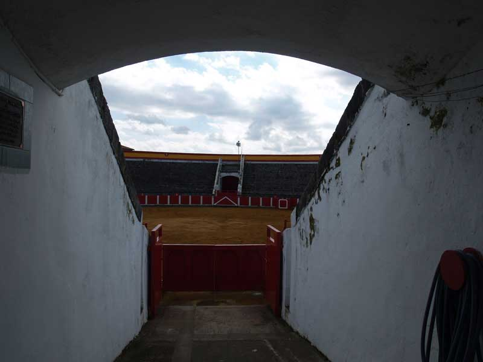

Encuentro en Santoña |
|
 Bueno, pues tras el chaparrón que a algunos cogió, nos fuimos hacia el puerto. A mi que siempre me han gustado las corridas.... abandoné el grupo y me dirigí a la plaza de toros, que por cierto, el año pasado celebró su centenario. |